🧪 Casos de Prueba — Módulo Login
Versión: 1.0.0
Módulo: Login / Autenticación
Prefijo de código: TC-LOGIN
Total de casos: 10
Fecha: 15 de mayo de 2026
Autor: Alejandro Sepúlveda Duarte
📋 Plantilla de Caso de Prueba
Cada caso de prueba sigue esta estructura estándar:
| Campo | Descripción |
|---|---|
| Identificador | Código único del caso (TC-LOGIN-XXX) |
| Descripción | Qué se está probando |
| Precondiciones | Estado previo requerido del sistema |
| Datos de entrada | Valores utilizados en la prueba |
| Pasos a seguir | Secuencia de acciones a ejecutar |
| Resultado esperado | Comportamiento correcto del sistema |
| Resultado obtenido | Comportamiento real observado |
| Estado | ✅ Pasó / ❌ Falló / ⚠️ Bloqueado |
| Evidencias | Referencias a capturas de pantalla o archivos |
📝 Descripción de la Funcionalidad
El módulo de Login de SofInventory implementa autenticación basada en username y contraseña. Al autenticarse exitosamente, el servidor Django genera un token Bearer único (64 caracteres URL-safe) que se persiste en la tabla sesiones_api de PostgreSQL con una duración de 12 horas. Este token debe incluirse en el header Authorization: Bearer <token> de todas las peticiones subsiguientes a recursos protegidos.
El sistema invalida todas las sesiones activas previas del usuario al hacer login (una sola sesión activa por usuario). Al hacer logout, el campo activa de la sesión en la tabla sesiones_api se establece en false.
Endpoints involucrados:
- POST /api/auth/login/ — Autenticación y obtención del token Bearer
- POST /api/auth/logout/ — Cierre de sesión / invalidación del token
- GET /api/auth/me/ — Verificación del token activo y retorno de los datos del usuario autenticado (username, rol, estado)
- GET /api/usuarios/listar/ — Listado de usuarios (solo Administrador, retorna 403 para otros roles)
🧪 Casos de Prueba
TC-LOGIN-001: Login exitoso como administrador
Descripción Verificar que un usuario con rol Administrador puede autenticarse correctamente usando su username y contraseña, y acceder al dashboard con todos los permisos habilitados.
📌 Información General
| Campo | Detalle |
|---|---|
| Identificador | TC-LOGIN-001 |
| Nombre | Login exitoso como administrador |
| Tipo de prueba | Funcional |
| Prioridad | Alta |
| Módulo | Autenticación |
| Estado | ✅ Pasó |
Precondiciones
Existe usuario con username = 'admin', contraseña Admin123, rol Administrador y estado activo en la tabla usuarios.
El servidor Django y la base de datos PostgreSQL están en línea.
Datos de entrada
{ "username": "admin", "password": "Admin123" }
Pasos a seguir
1. Navegar a la URL del sistema (http://localhost:4200).
2. Ingresar el username y contraseña del administrador.
3. Clic en "Iniciar Sesión".
4. Verificar redirección al dashboard.
5. En Postman: POST /api/auth/login/ con el body indicado:
{ "username": "admin", "password": "Admin123" }
SELECT token, expira_en, activa
FROM sesiones_api
WHERE usuario_id = (SELECT id FROM usuarios WHERE username = 'admin')
ORDER BY creada_en DESC LIMIT 1;
Resultado esperado
- El sistema debe retornar código HTTP 200 OK.
- Debe generarse un token Bearer válido registrado en sesiones_api.
- El usuario debe ser redirigido al dashboard.
- El campo activa debe quedar en true en PostgreSQL.
- El menú administrativo debe visualizarse correctamente.
Resultado obtenido
El sistema redirigió correctamente al dashboard. El token Bearer fue generado y registrado en la tabla sesiones_api. El menú de administración fue visible.
Evidencias
| Tipo | Evidencia |
|---|---|
| Frontend | 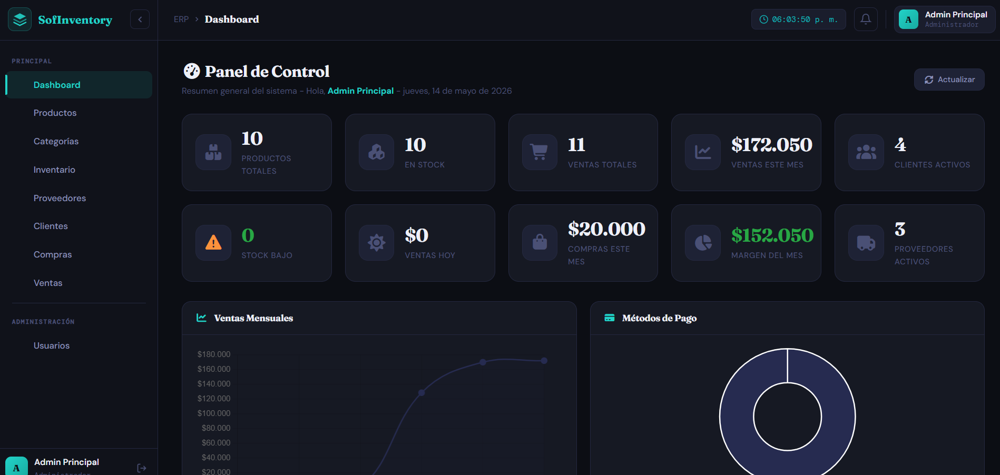 |
| Postman | 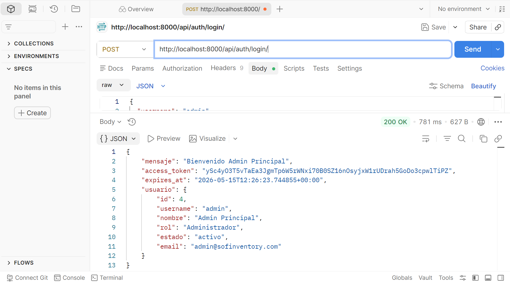 |
| Database | 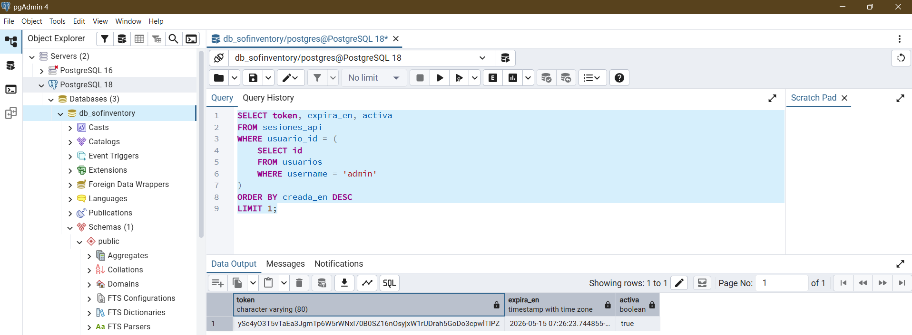 |
{kind=link}
{kind=link}
{kind=link}
📌 Clic en cualquier imagen para ver a pantalla completa
Resultado final: ✅ Exitoso
Observación: El flujo de autenticación funcionó correctamente en frontend, backend y base de datos.
TC-LOGIN-002: Autenticación exitosa de usuario Supervisor
Descripción Verificar que un usuario con rol Supervisor puede autenticarse y acceder al sistema con las restricciones de permisos correspondientes.
📌 Información General
| Campo | Detalle |
|---|---|
| Identificador | TC-LOGIN-002 |
| Nombre | Autenticación exitosa de usuario Supervisor |
| Tipo de prueba | Funcional |
| Prioridad | Alta |
| Módulo | Autenticación / Control de acceso |
| Estado | ✅ Pasó |
Precondiciones
Existe usuario con username = 'sebascal', contraseña sebas123, rol Supervisor y estado activo en la tabla usuarios.
Datos de entrada
{ "username": "sebascal", "password": "sebas123" }
Pasos a seguir
1. Ingresar las credenciales del Supervisor en el formulario de login.
2. Clic en "Iniciar Sesión".
3. Verificar redirección al dashboard.
4. Verificar que el menú NO muestra opciones de administración de usuarios.
5. En Postman: verificar que GET /api/usuarios/listar/ con el token del Supervisor devuelve HTTP 403.
Resultado esperado
- HTTP 200. Acceso exitoso.
- Objeto usuario retornado con "rol": "Supervisor".
- La sección Configuración > Usuarios no debe estar disponible en el menú.
- El endpoint GET /api/usuarios/listar/ retorna HTTP 403 Forbidden con el token del Supervisor.
Resultado obtenido
Acceso exitoso. El menú de administración no fue visible para el Supervisor. La petición a /api/usuarios/listar/ con el token de Supervisor retornó HTTP 403.
Evidencias
| Tipo | Evidencia |
|---|---|
| Frontend | 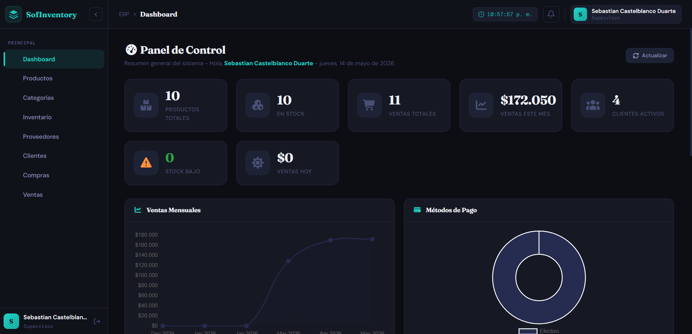 |
| Postman | 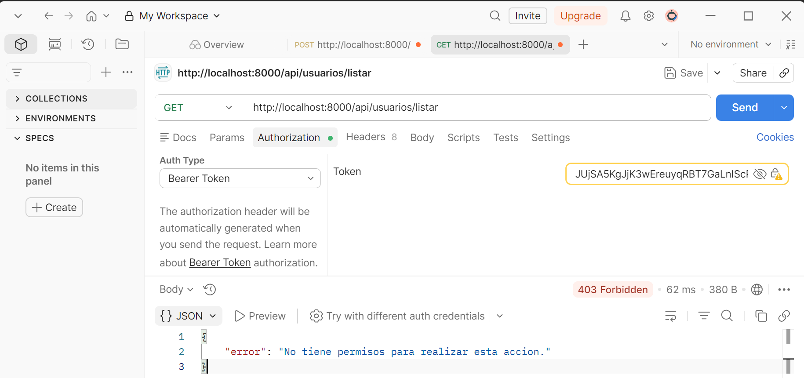 |
{kind=link}
{kind=link}
Resultado final: ✅ Exitoso
Observación: El control de acceso por rol funciona correctamente. El supervisor no puede acceder a endpoints de administración.
TC-LOGIN-003: Rechazo de username no registrado
Descripción
Verificar que el sistema rechaza el intento de login con un username que no existe en la tabla usuarios de PostgreSQL.
📌 Información General
| Campo | Detalle |
|---|---|
| Identificador | TC-LOGIN-003 |
| Nombre | Rechazo de username no registrado |
| Tipo de prueba | Funcional / Seguridad |
| Prioridad | Alta |
| Módulo | Autenticación |
| Estado | ✅ Pasó |
Precondiciones
El username usuario.fantasma NO está registrado en la tabla usuarios.
Datos de entrada
{ "username": "usuario.fantasma", "password": "CualquierPass@1" }
Pasos a seguir 1. Ingresar un username no registrado y cualquier contraseña en el formulario de login. 2. Clic en "Iniciar Sesión". 3. Observar el mensaje de respuesta en el frontend. 4. En Postman: verificar el código HTTP y el mensaje retornado.
Resultado esperado
- HTTP 401 Unauthorized.
- Mensaje genérico: "Usuario o contrasena incorrectos" (sin revelar que el username no existe, por seguridad).
- Sin acceso al sistema.
- No se crea ningún registro en sesiones_api.
Resultado obtenido
Se mostró el mensaje "Usuario o contrasena incorrectos". El servidor respondió con código 401. No hubo acceso. No se generó ningún token.
Evidencias
| Tipo | Evidencia |
|---|---|
| Frontend | 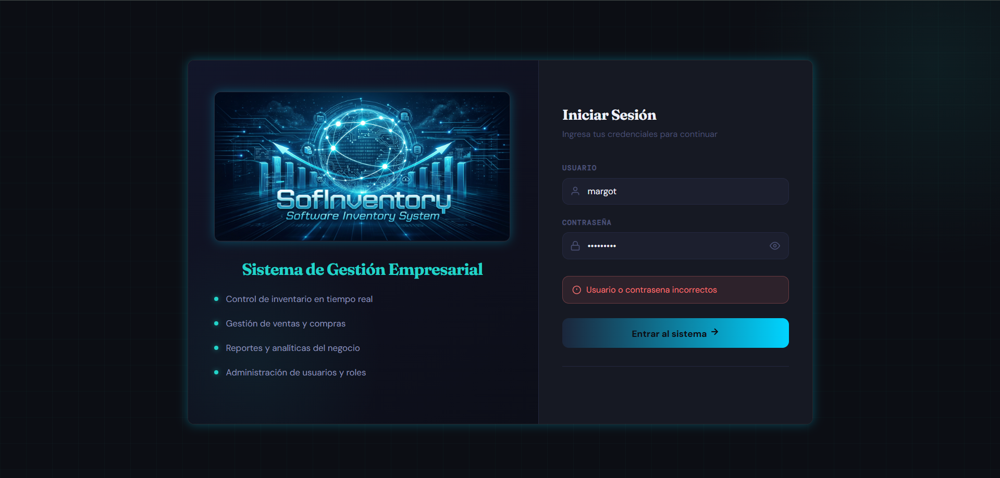 |
| Postman | 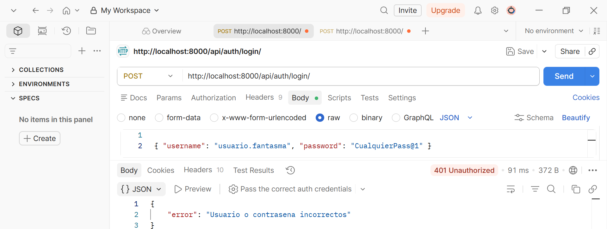 |
{kind=link}
{kind=link}
Resultado final: ✅ Exitoso
Observación: El sistema no revela si el username existe o no, lo cual es una buena práctica de seguridad.
TC-LOGIN-004: Rechazo con campos vacíos
Descripción Verificar que el sistema no permite enviar el formulario de login con los campos de username y/o contraseña vacíos.
📌 Información General
| Campo | Detalle |
|---|---|
| Identificador | TC-LOGIN-004 |
| Nombre | Rechazo con campos vacíos |
| Tipo de prueba | Validación / Funcional |
| Prioridad | Media |
| Módulo | Autenticación |
| Estado | ✅ Pasó |
Precondiciones Ninguna sesión activa en el sistema.
Datos de entrada - Frontend: formulario completamente en blanco. - Postman: body
{ "username": "", "password": "" }
Pasos a seguir
1. Acceder al formulario de Login.
2. No ingresar ningún dato.
3. Clic en "Iniciar Sesión".
4. Desde Postman: POST /api/auth/login/ con body
{ "username": "", "password": "" }
Resultado esperado
- Frontend: campos marcados como inválidos con mensajes de validación visibles.
- Postman: HTTP 400 con mensaje "error": "Datos invalidos" (validación del LoginSerializer de DRF).
- No se realiza ninguna consulta a la tabla usuarios.
Resultado obtenido
Los mensajes de validación aparecieron en el frontend. Postman respondió HTTP 400 con "error": "Datos invalidos". No se realizó ninguna consulta a la base de datos.
Evidencias
| Tipo | Evidencia |
|---|---|
| Frontend | 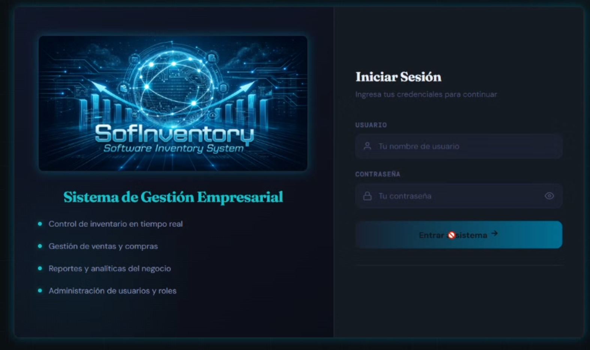 |
| Postman | 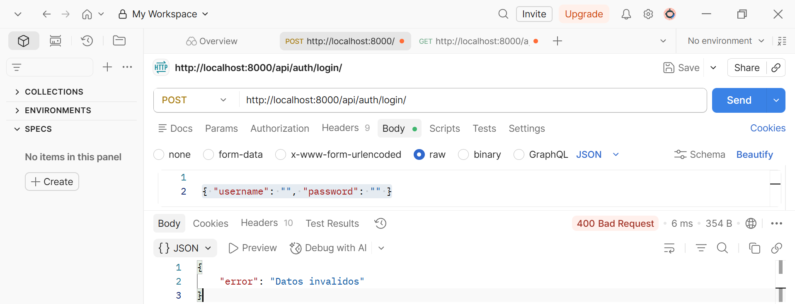 |
{kind=link}
{kind=link}
Resultado final: ✅ Exitoso
Observación: Las validaciones del formulario Angular y del LoginSerializer de DRF funcionan correctamente ante campos vacíos.
TC-LOGIN-005: Rechazo de usuario inactivo
Descripción
Verificar que el sistema rechaza el intento de login de un usuario cuyo estado sea inactivo en la tabla usuarios, aunque sus credenciales sean correctas.
📌 Información General
| Campo | Detalle |
|---|---|
| Identificador | TC-LOGIN-005 |
| Nombre | Rechazo de usuario inactivo |
| Tipo de prueba | Funcional / Control de acceso |
| Prioridad | Alta |
| Módulo | Autenticación |
| Estado | ✅ Pasó |
Precondiciones
Existe usuario con username = 'inactivo', contraseña Inac@1234 y estado = 'inactivo' en la tabla usuarios.
Verificar estado previo en pgAdmin:
SELECT username, estado FROM usuarios WHERE username = 'inactivo';
Datos de entrada
{ "username": "sebascal", "password": "sebas123" }
Pasos a seguir
1. Ingresar las credenciales del usuario inactivo en el formulario de login.
2. Clic en "Iniciar Sesión".
3. Observar el mensaje de respuesta.
4. Verificar en pgAdmin que no se generó ningún registro en sesiones_api:
SELECT COUNT(*) FROM sesiones_api
WHERE usuario_id = (SELECT id FROM usuarios WHERE username = 'inactivo')
AND activa = true;
Resultado esperado
- HTTP 403 Forbidden.
- Mensaje: "Usuario inactivo. Contacte al administrador.".
- Sin acceso al sistema.
- No se genera token ni registro en sesiones_api.
Resultado obtenido
El sistema respondió con HTTP 403 y el mensaje "Usuario inactivo. Contacte al administrador.". El frontend mostró el mensaje de error. No se generó ningún registro en sesiones_api.
Evidencias
| Tipo | Evidencia |
|---|---|
| Frontend | 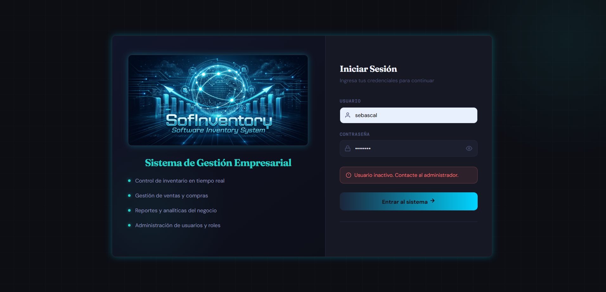 |
| Postman | 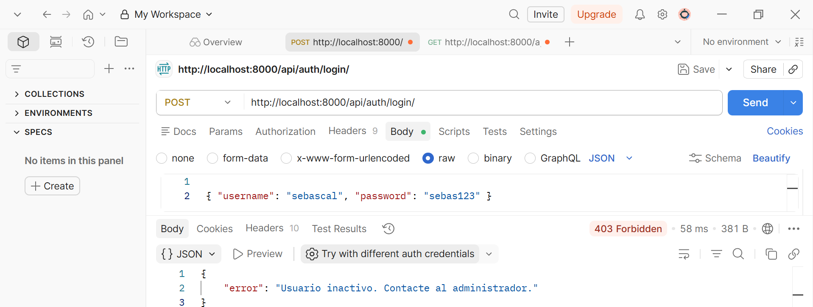 |
{kind=link}
{kind=link}
Resultado final: ✅ Exitoso Observación: El sistema bloquea correctamente el acceso a usuarios inactivos antes de verificar la contraseña.
TC-LOGIN-006: Contraseña incorrecta (usuario existe y está activo)
Descripción Verificar que el sistema rechaza el acceso cuando el username es correcto pero la contraseña es incorrecta, sin revelar información sensible sobre la existencia del usuario.
📌 Información General
| Campo | Detalle |
|---|---|
| Identificador | TC-LOGIN-006 |
| Nombre | Contraseña incorrecta |
| Tipo de prueba | Funcional / Seguridad |
| Prioridad | Alta |
| Módulo | Autenticación |
| Estado | ✅ Pasó |
Precondiciones
Existe usuario activo con username = 'admin' en la tabla usuarios.
Datos de entrada
{ "username": "admin", "password": "ContraseñaWrong99!" }
Pasos a seguir 1. Ingresar el username correcto del administrador con una contraseña incorrecta. 2. Clic en "Iniciar Sesión". 3. Comparar el mensaje de error con el obtenido en TC-LOGIN-003 (username inexistente).
Resultado esperado
- HTTP 401 Unauthorized.
- Mensaje genérico idéntico al de username no registrado: "Usuario o contrasena incorrectos".
- El mensaje no revela que el username sí existe.
- No se genera token.
Resultado obtenido
Se mostró el mensaje "Usuario o contrasena incorrectos". El mensaje fue idéntico al caso de username inexistente. No se generó token.
Evidencias
| Tipo | Evidencia |
|---|---|
| Frontend | |
| Postman | 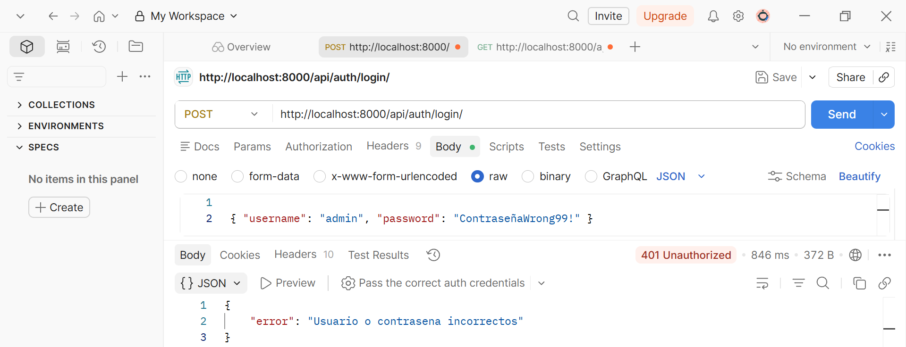 |
{kind=link}
{kind=link}
Resultado final: ✅ Exitoso
Observación: El mensaje unificado para credenciales inválidas es una buena práctica de seguridad que previene la enumeración de usuarios.
TC-LOGIN-007: Inyección de caracteres especiales
Descripción Verificar que el sistema maneja correctamente la inyección de caracteres especiales en los campos de login, sin producir errores de servidor.
📌 Información General
| Campo | Detalle |
|---|---|
| Identificador | TC-LOGIN-007 |
| Nombre | Inyección de caracteres especiales |
| Tipo de prueba | Seguridad |
| Prioridad | Alta |
| Módulo | Autenticación |
| Estado | ✅ Pasó |
Precondiciones Ninguna sesión activa.
Datos de entrada
{
"username": "' OR '1'='1' --",
"password": "<script>alert('xss')</script>"
}
Pasos a seguir
1. En Postman, enviar POST /api/auth/login/ con el body indicado.
2. Observar el código de respuesta HTTP.
3. Verificar que no hubo acceso no autorizado.
4. Revisar los logs del servidor Django.
Resultado esperado
- HTTP 401 Unauthorized.
- Mensaje: "Usuario o contrasena incorrectos".
- No se generó token de acceso.
- Los logs de Django muestran la petición registrada normalmente sin errores de servidor.
Resultado obtenido
El servidor respondió HTTP 401 con el mensaje "Usuario o contrasena incorrectos". No se generó token ni hubo acceso al sistema. La terminal de Django registró la petición normalmente:
Evidencias
| Tipo | Evidencia |
|---|---|
| Frontend | 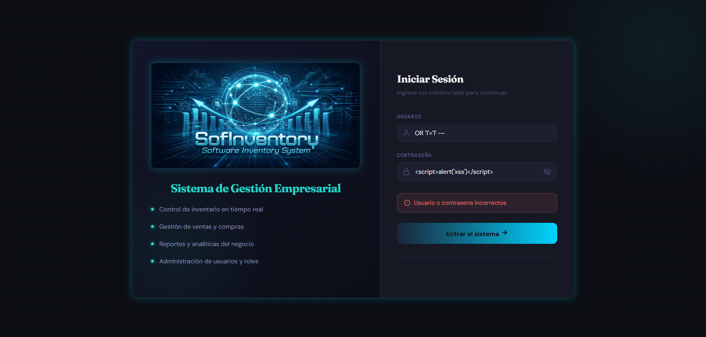 |
| Postman | 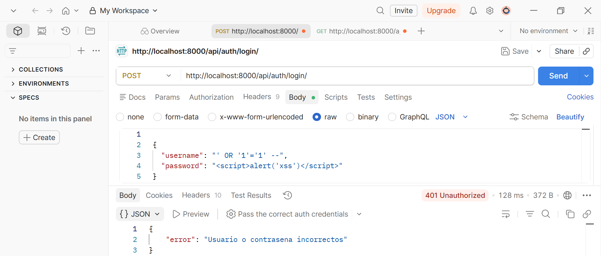 |
{kind=link}
{kind=link}
📌 Clic en cualquier imagen para ver a pantalla completa
Resultado final: ✅ Exitoso
Observación: El sistema rechaza correctamente los caracteres especiales retornando 401 sin revelar información sensible ni producir errores de servidor. Django ORM previene SQL Injection mediante consultas parametrizadas.
TC-LOGIN-008: Cierre de sesión correcto (Logout)
Descripción
Verificar que al cerrar sesión el token Bearer es invalidado en la tabla sesiones_api de PostgreSQL y el usuario no puede seguir accediendo a recursos protegidos con el token revocado.
📌 Información General
| Campo | Detalle |
|---|---|
| Identificador | TC-LOGIN-008 |
| Nombre | Cierre de sesión correcto (Logout) |
| Tipo de prueba | Funcional / Seguridad |
| Prioridad | Alta |
| Módulo | Autenticación |
| Estado | ✅ Pasó |
Precondiciones
El usuario admin está autenticado y tiene un token Bearer activo (activa = true en sesiones_api).
Datos de entrada Token Bearer activo obtenido en TC-LOGIN-001.
Pasos a seguir
1. Desde el dashboard, clic en "Cerrar Sesión".
2. Verificar que redirige a la pantalla de Login.
3. En Postman: intentar GET /api/auth/me/ con el token anterior.
4. En pgAdmin verificar:
SELECT activa FROM sesiones_api
WHERE token = '<token_usado>';
Resultado esperado
- Redirección al formulario de Login.
- Postman: HTTP 403 con mensaje "Token invalido o sesion cerrada.".
- En pgAdmin: el campo activa del registro de sesión debe ser false.
- El token ya no es funcional para ninguna petición protegida.
Resultado obtenido
La sesión se cerró correctamente. La petición con el token anterior retornó HTTP 403. En pgAdmin, el campo activa estaba en false.
Evidencias
| Tipo | Evidencia |
|---|---|
| Frontend | 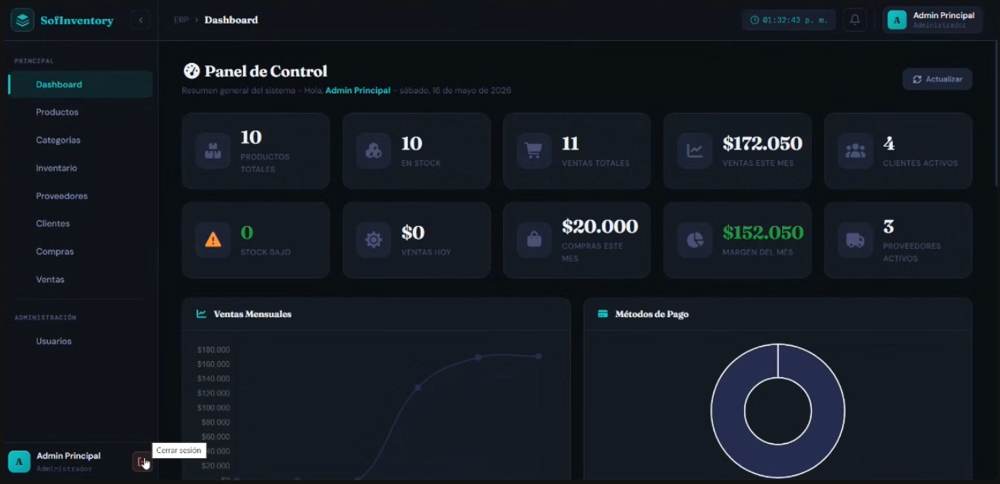 |
| Postman | 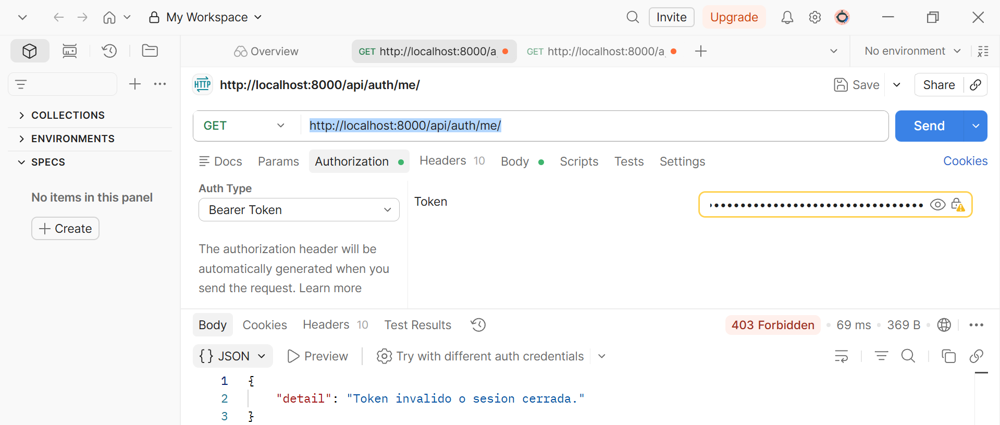 |
| Database | 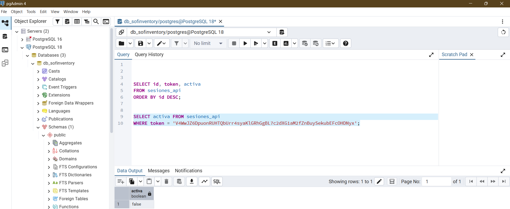 |
{kind=link}
{kind=link}
{kind=link}
📌 Clic en cualquier imagen para ver a pantalla completa
Resultado final: ✅ Exitoso
Observación: El token es invalidado correctamente en sesiones_api. La invalidación ocurre en la base de datos, no depende del cliente.
TC-LOGIN-009: Acceso a ruta protegida sin token
Descripción Verificar que las rutas protegidas del sistema no son accesibles sin un token Bearer válido, tanto desde el frontend Angular (Guard) como desde el backend Django (DRF).
📌 Información General
| Campo | Detalle |
|---|---|
| Identificador | TC-LOGIN-009 |
| Nombre | Acceso a ruta protegida sin token |
| Tipo de prueba | Seguridad / Funcional |
| Prioridad | Alta |
| Módulo | Autenticación / Control de acceso |
| Estado | ✅ Pasó |
Precondiciones No existe ninguna sesión activa. El servicio de autenticación de Angular no tiene token almacenado.
Datos de entrada
- URL directa: http://localhost:4200/dashboard
- Postman: GET /api/auth/me/ sin header Authorization.
Pasos a seguir
1. Sin estar autenticado, intentar navegar directamente a /dashboard.
2. En Postman: GET /api/auth/me/ sin incluir el header Authorization.
3. Observar ambas respuestas.
Resultado esperado - Frontend: Angular Route Guard redirige automáticamente a la pantalla de Login. - Backend: HTTP 401 ó 403 Unauthorized desde DRF.
Resultado obtenido El Angular Guard redirigió a Login. La API respondió con 403. El sistema no permitió ningún acceso sin token.
Evidencias
| Tipo | Evidencia |
|---|---|
| Frontend | 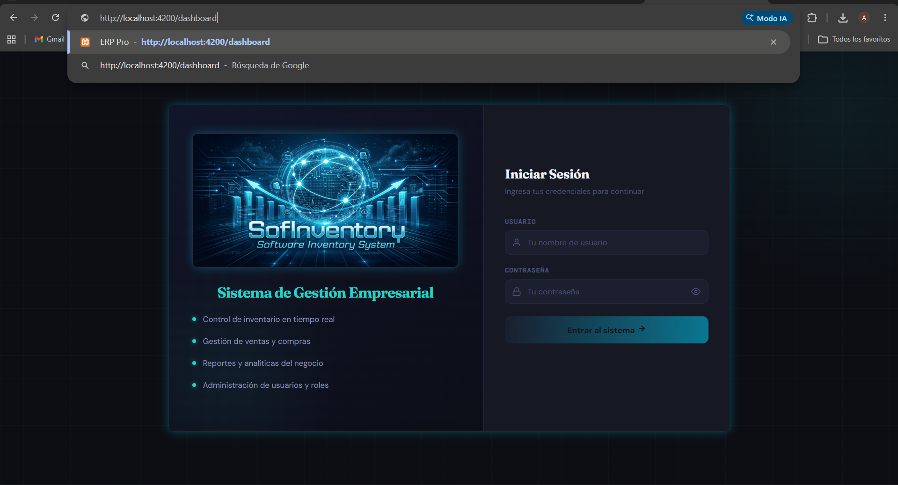 |
| Postman | 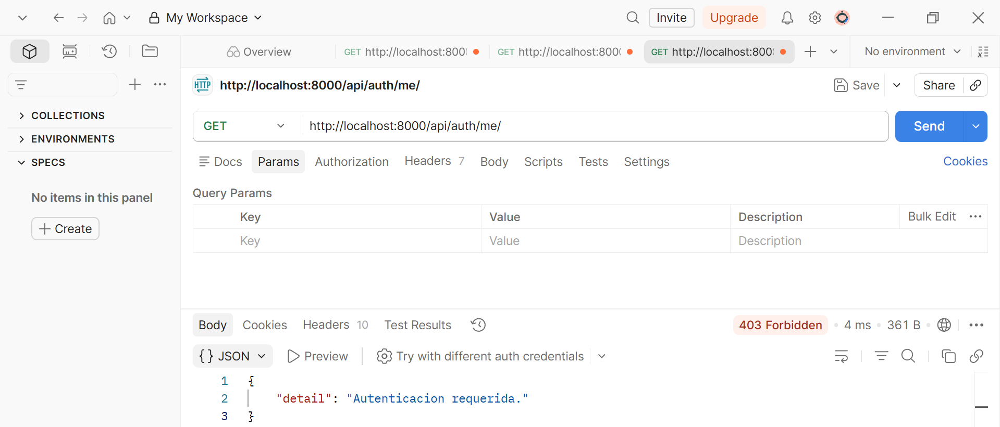 |
{kind=link}
{kind=link}
📌 Clic en cualquier imagen para ver a pantalla completa
Resultado final: ✅ Exitoso
Observación: El Angular Route Guard y el middleware de autenticación de DRF protegen correctamente todos los recursos del sistema.
TC-LOGIN-010: Comportamiento con sesión expirada
Descripción
Verificar que el sistema maneja correctamente una sesión cuyo token ha expirado en la tabla sesiones_api, solicitando al usuario que vuelva a iniciar sesión.
📌 Información General
| Campo | Detalle |
|---|---|
| Identificador | TC-LOGIN-010 |
| Nombre | Comportamiento con sesión expirada |
| Tipo de prueba | Funcional / Seguridad |
| Prioridad | Media |
| Módulo | Autenticación |
| Estado | ❌ Falló (parcialmente) |
Precondiciones
El usuario admin está autenticado y tiene una sesión activa en sesiones_api.
Acceso a pgAdmin para forzar la expiración.
Datos de entrada Forzar expiración ejecutando en pgAdmin:
UPDATE sesiones_api
SET expira_en = NOW() - INTERVAL '1 hour'
WHERE activa = true
AND usuario_id = (SELECT id FROM usuarios WHERE username = 'admin');
Pasos a seguir
1. Autenticarse como administrador.
2. Ejecutar la consulta SQL en pgAdmin para adelantar la expiración de la sesión.
3. Sin cerrar el navegador, navegar a cualquier sección que cargue datos de la API (ej. /dashboard).
4. En Postman: GET /api/auth/me/ con el token expirado.
5. Verificar en pgAdmin:
SELECT activa FROM sesiones_api
WHERE usuario_id = (SELECT id FROM usuarios WHERE username = 'admin')
ORDER BY creada_en DESC LIMIT 1;
Resultado esperado
- Backend: HTTP 403 con mensaje "La sesion expiro. Inicie sesion nuevamente." y campo activa en false.
- Frontend: el HttpInterceptor de Angular captura el 403 y redirige a /login con el mensaje "Tu sesión ha expirado."
Resultado obtenido
✅ Backend correcto: Postman recibió HTTP 403 con el mensaje "La sesion expiro. Inicie sesion nuevamente." y en pgAdmin el campo activa pasó a false.
⚠️ Frontend fallido: el Angular frontend no interceptó el 403 devuelto por la API. El usuario permaneció en el dashboard viendo las secciones vacías sin ningún mensaje informativo ni redirección al Login.
Severidad: 🟡 Media — El backend maneja correctamente la expiración. El defecto es de UX en el frontend. No representa acceso no autorizado. Defecto registrado: BUG-LOGIN-002
Evidencias
| Tipo | Evidencia |
|---|---|
| Postman | 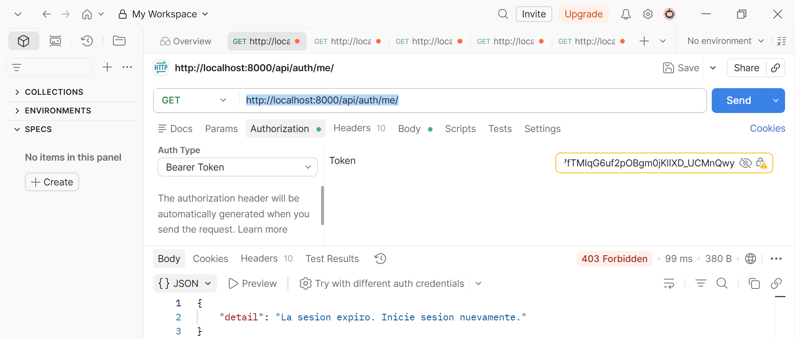 |
| Frontend | 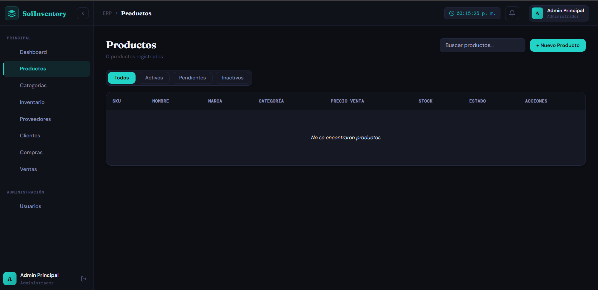 |
| Database | 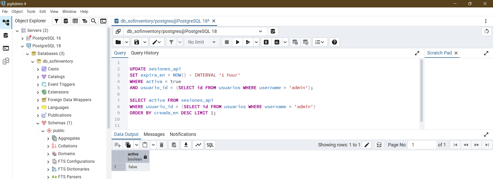 |
{kind=link}
{kind=link}
{kind=link}
📌 Clic en cualquier imagen para ver a pantalla completa
Resultado final: ❌ Fallido (parcialmente)
Observación: El backend invalida la sesión correctamente. El defecto está en el HttpInterceptor de Angular que no gestiona los 401 por sesión expirada. Ver BUG-LOGIN-002 en DEFECTOS.md.
📊 Resumen de Resultados
| ID | Descripción | Severidad (si falló) | Estado |
|---|---|---|---|
| TC-LOGIN-001 | Login exitoso — administrador | — | ✅ Pasó |
| TC-LOGIN-002 | Login exitoso — supervisor (permisos restringidos) | — | ✅ Pasó |
| TC-LOGIN-003 | Username no registrado rechazado | — | ✅ Pasó |
| TC-LOGIN-004 | Campos vacíos rechazados | — | ✅ Pasó |
| TC-LOGIN-005 | Usuario inactivo rechazado | — | ✅ Pasó |
| TC-LOGIN-006 | Contraseña incorrecta rechazada | — | ✅ Pasó |
| TC-LOGIN-007 | Inyección de caracteres especiales | — | ✅ Pasó |
| TC-LOGIN-008 | Cierre de sesión correcto | — | ✅ Pasó |
| TC-LOGIN-009 | Ruta protegida sin token rechazada | — | ✅ Pasó |
| TC-LOGIN-010 | Sesión expirada — frontend no redirige | 🟡 Media | ❌ Falló |
| TOTAL | 9/10 (90.0%) |
🔍 Análisis de Resultados
| Aspecto Evaluado | Resultado | Estado |
|---|---|---|
| Autenticación con credenciales válidas | Funciona correctamente para todos los roles | ✅ Correcto |
| Rechazo de credenciales inválidas | Mensajes genéricos sin revelar información del usuario | ✅ Correcto |
| Bloqueo de usuario inactivo | HTTP 403 con mensaje claro | ✅ Correcto |
| Validaciones de formulario (frontend) | Campos requeridos validados correctamente | ✅ Correcto |
| Seguridad ante inyección de caracteres | HTTP 401 retornado correctamente — Django ORM previene SQL Injection | ✅ Correcto |
| Cierre de sesión e invalidación de token | Campo activa = false en sesiones_api — correcto |
✅ Correcto |
| Protección de rutas (Angular Guard) | Rutas sin token redirigen correctamente al Login | ✅ Correcto |
| Manejo de sesión expirada en backend | DRF invalida y retorna 403 correctamente | ✅ Correcto |
| Manejo de sesión expirada en frontend | Angular no intercepta el 403 ni redirige al Login | ❌ Deficiencia |
| Mensaje de error unificado (seguridad) | Sin distinción entre username inválido y contraseña incorrecta | ✅ Correcto (buena práctica) |
Hallazgo:
- BUG-LOGIN-001: El frontend Angular carece de un HttpInterceptor que maneje los 403 por sesión expirada. El backend funciona correctamente; el problema es exclusivamente de UX en el cliente.
💡 Recomendaciones
| # | Prioridad | Categoría | Recomendación |
|---|---|---|---|
| 1 | 🟠 Importante | UX | Implementar un HttpInterceptor en Angular que capture 403, limpie el token y redirija a /login con el mensaje de sesión expirada. |
| 2 | 🟠 Importante | Seguridad | Agregar bloqueo temporal tras N intentos fallidos (ej. 5 min tras 5 intentos) y registrar los intentos en una tabla de auditoría en PostgreSQL. |
| 3 | 🟡 Mejora | Seguridad | Registrar en logs todos los intentos fallidos: username, IP, user_agent y timestamp. |
| 4 | 🟡 Mejora | UX | Mostrar indicador visual del tiempo restante de sesión y advertencia al quedar menos de 30 minutos. |
| 5 | 🔵 Buenas prácticas | Seguridad | Implementar HTTPS en todos los ambientes para proteger el token Bearer y las credenciales en tránsito. |
© 2026 SofInventory — Área de Calidad de Software | Versión 1.0.0